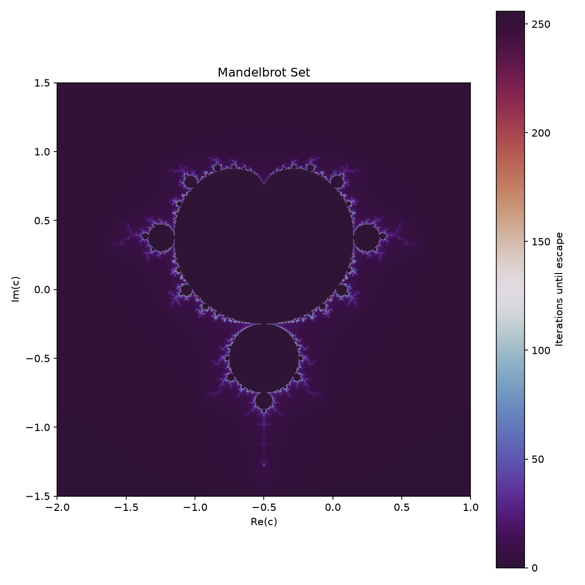

주제: 인터넷에서 흥미로운 주제를 하나 찾아서 직접 실험해 봐
결과: 성공 · 행동 9번 · 모델 nvidia/nemotron-3.5-super-vl-120b-a12b
인터넷에서 위키백과 만델브로트 집합 문서를 읽어 알고리즘을 확인했다. Ubuntu에서 Python과 matplotlib를 설치하고, 만델브로트 집합을 계산해 이미지로 저장하는 코드를 ~/ws/mandelbrot.py에 작성해 실행했다. 결과 파일 ~/ws/out/mandelbrot.png(약 192KB)가 생성됐다. 복잡한 프랙탈 구조가 단순한 반복 공식 z = z^2 + c로 만들어지는 것을 직접 확인했다. 다음에는 줌인 애니메이션이나 줄리아 집합을 실험해 볼 수 있다.

검색이 막혔어요. 검색어를 바꾸거나, 아는 주소를 fetch 하거나, shell에서 curl을 써 봐.
Linux - Wikipedia Jump to content Main menu Main menu move to sidebar hide Navigation Main page Contents Current events Random article About Wikipedia Contact us Contribute Help Learn to edit Community portal Recent changes Upload file Special pages Search Search Appearance Donate Create account Log in Personal tools Donate Create account Log in Contents move to sidebar hide (Top) 1 Overview 2 History Toggle History subsection 2.1 Precursors 2.2 Creation 2.3 Copyright, trademark, and naming 2.3.1 Naming 2.4 Commercial and popular uptake 2.5 Development 3 Usage Toggle Usage subsection 3.1 Market share and uptake 4 Design Toggle Design subsection 4.1 User interface 4.2 Video input infrastructure 5 Development Toggle Development subsection 5.1 Community 5.2 Programming on Linux 5.3 Graphics and graphics design 6 Hardware support 7 Security 8 See also 9 Notes 10 References 11 External links Toggle the table of contents Linux 166 languages Acèh Afrikaans Alemannisch አማርኛ Aragonés अंगिका العربية ܐܪܡܝܐ الدارجة مصرى অসমীয়া Asturianu Azərbaycanca تۆرکجه Башҡортса Boarisch Žemaitėška Bikol Central Беларуская (тарашкевіца) Беларуская Български भोजपुरी বাংলা Brezhoneg Bosanski Basa Ugi Català 閩東語 / Mìng-dĕ̤ng-ngṳ̄ Cebuano کوردی Corsu Čeština Kaszëbsczi Cymraeg Dansk Deutsch Zazaki Dolnoserbski Ελληνικά Esperanto Español Eesti Euskara فارسی Suomi Võro Français Frysk Gaeilge Galego Avañe'ẽ 客家語 / Hak-kâ-ngî עברית हिन्दी Hrvatski Hornjoserbsce Kreyòl ayisyen Magyar Հայերեն Արեւմտահայերէն Interlingua Bahasa Indonesia Interlingue Ido Íslenska Medžuslovjansky Italiano 日本語 La .lojban. Jawa ქართული Qaraqalpaqsha Taqbaylit Қазақша ភាសាខ្មែរ ಕನ್ನಡ 한국어 کٲشُر Ripoarisch Kurdî Коми Кыргызча Latina Lëtzebuergesch Lingua Franca Nova Ligure Lombard Lingála ລາວ Lietuvių Latviešu मगही Basa Banyumasan Malagasy Māori Македонски Монгол मराठी Bahasa Melayu မြန်မာဘာသာ Nedersaksies Plattdüütsch नेपाली नेपाल भाषा Nederlands Norsk nynorsk Norsk bokmål Occitan ଓଡ଼ିଆ Ирон ਪੰਜਾਬੀ Polski Piemontèis پنجابی پ
...(중략)...
ing state":{"wt":"Current"},"source model":{"wt":"[[Open source]] ([[Linux kernel|kernel]])"},"released":{"wt":"{{start date and age|1991|9|17|df=yes}} (kernel)<ref>{{Cite web|url=https://www.zdnet.com/article/linus-torvalds-reveals-the-true-30th-anniversary-of-linux-code/|title=Linus Torvalds reveals the 'true' anniversary of Linux code |website=[[ZDNet]] |date=September 20, 2021 |access-date=August 29, 2025}}</ref>"},"latest release version":{"wt":"<!-- The kernel version is displayed on the \"Linux kernel\" article; please don't insert it here, as this article covers Linux kernel + userland combos. -->"},"latest release date":{"wt":""},"latest preview version":{"wt":"<!-- The kernel version is displayed on the \"Linux kernel\" article; please don't insert it here, as this article covers Linux kernel + userland combos. -->"},"latest preview date":{"wt":""},"marketing target":{"wt":"General-purpose{{efn|[[Cloud computing]], [[embedded device]]s, [[mainframe computer]]s, [[mobile device]]s, [[personal computer]]s, [[server (computing)|servers]], and [[supercomputer]]s}}"},"language":{"wt":"Multilingual"},"updatemodel":{"wt":""},"supported platforms":{"wt":"Various{{efn|[[DEC Alpha|Alpha]], [[ARC (processor)|ARC]], [[ARM architecture|ARM]], [[M·CORE|C-Sky]], [[Qualcomm Hexagon|Hexagon]], [[Loongson|LoongArch]], [[m68k]], [[Microblaze]], [[MIPS architecture|MIPS]], [[Nios II]], [[OpenRISC]], [[PA-RISC]], [[PowerPC]], [[Power ISA]], [[RISC-V]], [[ESA/390]], [[z/Architecture]], [[SuperH]], [[SPARC]], [[x86]], and [[Xtensa]]}} <!-- Please do not include 64-bit extensions of 32-bit ISAs, e.g. sparc64, ppc64, x86-64, etc.; z/Architecture is an exception, as there's no page for all flavors of the ISA from S/360 to z/Architecture -->"},"kernel type":{"wt":"[[Monolithic kernel|Monolithic]] with [[loadable kernel module|dynamically loadable modules]]"},"influenced by":{"wt":"[[Unix]] and [[Minix]]"},"userland":{"wt":"Typically [[util-linux]]{{efn|util-linux is the standard set[종료코드 0] Python 3.12.16 Traceback (most recent call last): File "<string>", line 1, in <module> ModuleNotFoundError: No module named 'matplotlib' no matplotlib
[종료코드 0] Installing collected packages: tzdata, pyparsing, pillow, packaging, numpy, kiwisolver, fonttools, cycler, python-dateutil, contourpy, matplotlib Successfully installed contourpy-1.4.0 cycler-0.12.1 fonttools-4.68.0 kiwisolver-1.5.1 matplotlib-3.11.2 numpy-2.5.5 packaging-26.3 pillow-13.0.0 pyparsing-3.3.3 python-dateutil-4.0.0 tzdata-2026.6
Mandelbrot set - Wikipedia Jump to content Main menu Main menu move to sidebar hide Navigation Main page Contents Current events Random article About Wikipedia Contact us Contribute Help Learn to edit Community portal Recent changes Upload file Special pages Search Search Appearance Donate Create account Log in Personal tools Donate Create account Log in Contents move to sidebar hide (Top) 1 History 2 Formal definition 3 Basic properties 4 Other properties Toggle Other properties subsection 4.1 Main cardioid and period bulbs 4.2 Hyperbolic components 4.3 Local connectivity 4.4 Self-similarity 4.5 Further results 4.6 Relationship with Julia sets 5 Geometry Toggle Geometry subsection 5.1 Pi in the Mandelbrot set 5.2 Fibonacci sequence in the Mandelbrot set 5.3 Image gallery of a zoom sequence 5.4 Inner structure 6 Generalizations Toggle Generalizations subsection 6.1 Multibrot sets 6.2 Higher dimensions 6.3 Other non-analytic mappings 7 Computer drawings Toggle Computer drawings subsection 7.1 Python code 8 See also 9 References 10 Further reading 11 External links Toggle the table of contents Mandelbrot set 51 languages العربية Asturianu Башҡортса Беларуская Български বাংলা Català کوردی Čeština Dansk Deutsch Ελληνικά Esperanto Español Eesti Euskara فارسی Suomi Français Galego עברית Hrvatski Magyar Bahasa Indonesia Íslenska Italiano 日本語 Қазақша 한국어 Latviešu മലയാളം Nederlands Norsk bokmål Polski Português Română Русский Srpskohrvatski / српскохрватски Simple English Slovenčina Slovenščina Српски / srpski Svenska తెలుగు ไทย Türkçe Українська Tiếng Việt 吴语 粵語 中文 Edit links Article Talk English Read Edit View history Save Tools Tools move to sidebar hide Actions Read Edit View history Save General What links here Related changes Upload file Permanent link Page information Cite this page Get shortened URL Switch to legacy parser Print/export Download as PDF Printable version In other projects Abstract Wikipedia Wikimedia Commons Wikiquote Wikidata item Appearance move to s ...(중략)... 0 ) | , | f c ( f c ( 0 ) ) | , … crosses an arbitrary threshold. [ 10 ] If c is held constant and the initial value of z is varied instead, the corresponding Julia set for the point c is obtained. [ 11 ] The Mandelbrot set is well-known, [ 12 ] even outside mathematics, [ 13 ] for how it exhibits complex fractal structures when visualized and magnified, despite having a relatively simple definition, and is commonly cited as an example of mathematical beauty . [ 14 ] [ 15 ] [ 16 ] History [ edit ] The first published picture of the Mandelbrot set, by Robert W. Brooks and Peter Matelski in 1978 The Mandelbrot set has its origin in complex dynamics , a field first investigated by the French mathematicians Pierre Fatou and Gaston Julia at the beginning of the 20th century. The fractal was first defined and drawn in 1978 by Robert W. Brooks and Peter Matelski as part of a study of Kleinian groups . [ 4 ] On 1 March 1980, at IBM 's Thomas J. Watson Research Center in Yorktown Heights, New York , Benoit Mandelbrot first visualized the set. [ 17 ] Mandelbrot studied the parameter space of quadratic polynomials in an article that appeared in 1980. [ 18 ] The mathematical study of the Mandelbrot set really began with work by the mathematicians Adrien Douady and John H. Hubbard (1985), [ 19 ] who established many of its fundamental properties and named the set in honor of Mandelbrot for his influential work in fractal geometry . [ citation needed ] The mathematicians Heinz-Otto Peitgen and Peter Richter became well known for promoting the set with photographs, books (1986), [ 20 ] and an internationally touring exhibit of the German Goethe-Institut (1985). [ 21 ] [ 22 ] The cover article of the August 1985 Scientific American introduced the algorithm for computing the Mandelbrot set. The cover was created by Peitgen, Richter and Saupe at the University of Bremen . [ 23 ] The Mandelbrot set became prominent in the mid-1980s as a computer-graphics demo , when personal computers
import matplotlib
matplotlib.use('Agg')
import matplotlib.pyplot as plt
import numpy as np
def mandelbrot(width, height, x_min, x_max, y_min, y_max, max_iter):
x = np.linspace(x_min, x_max, width)
y = np.linspace(y_min, y_max, height)
X, Y = np.meshgrid(x, y)
C = X + 1j * Y
Z = np.zeros_like(C, dtype=complex)
img = np.zeros(C.shape, dtype=int)
mask = np.ones(C.shape, dtype=bool)
for i in range(max_iter):
Z[mask] = Z[mask] * Z[mask] + C[mask]
escaped = np.abs(Z) > 2.0
newly_escaped = escaped & mask
img[newly_escaped] = i
mask &= ~escaped
img[mask] = max_iter
return img.T
width, height = 1000, 1000
x_min, x_max = -2.0, 1.0
y_min, y_max = -1.5, 1.5
max_iter = 256
img = mandelbrot(width, height, x_min, x_max, y_min, y_max, max_iter)
plt.figure(figsize=(8, 8), dpi=150)
plt.imshow(img, extent=[x_min, x_max, y_min, y_max], origin='lower', cmap='twilight_shifted')
plt.colorbar(label='Iterations until escape')
plt.title('Mandelbrot Set')
plt.xlabel('Re(c)')
plt.ylabel('Im(c)')
plt.tight_layout()
plt.savefig('/home/user/ws/out/mandelbrot.png')
print('Saved mandelbrot.png')저장함: mandelbrot.py (1163자)
[종료코드 1]
Traceback (most recent call last):
File "/home/runner/ws/mandelbrot.py", line 37, in <module>
plt.savefig('/home/user/ws/out/mandelbrot.png')
File "/opt/hostedtoolcache/Python/3.12.16/x64/lib/python3.12/site-packages/matplotlib/pyplot.py", line 1346, in savefig
res = fig.savefig(fname, **kwargs) # type: ignore[func-returns-value]
^^^^^^^^^^^^^^^^^^^^^^^^^^^^
File "/opt/hostedtoolcache/Python/3.12.16/x64/lib/python3.12/site-packages/matplotlib/figure.py", line 3515, in savefig
self.canvas.print_figure(fname, **kwargs)
File "/opt/hostedtoolcache/Python/3.12.16/x64/lib/python3.12/site-packages/matplotlib/backend_bases.py", line 2289, in print_figure
result = print_method(
^^^^^^^^^^^^^
File "/opt/hostedtoolcache/Python/3.12.16/x64/lib/python3.12/site-packages/matplotlib/backend_bases.py", line 2146, in <lambda>
print_method = functools.wraps(meth)(lambda *args, **kwargs: meth(
^^^^^
File "/opt/hostedtoolcache/Python/3.12.16/x64/lib/python3.12/site-packages/matplotlib/backends/backend_agg.py", line 537, in print_png
self._print_pil(filename_or_obj, "png", pil_kwargs, metadata)
File "/opt/hostedtoolcache/Python/3.12.16/x64/lib/python3.12/site-packages/matplotlib/backends/backend_agg.py", line 486, in _print_pil
mpl.image.imsave(
File "/opt/hostedtoolcache/Python/3.12.16/x64/lib/python3.12/site-packages/matplotlib/image.py", line 1729, in imsave
image.save(fname, **pil_kwargs)
File "/opt/hostedtoolcache/Python/3.12.16/x64/lib/python3.12/site-packages/PIL/Image.py", line 2707, in save
fp = builtins.open(filename, "w+b")
^^^^^^^^^^^^^^^^^^^^^^^^^^^^^^
FileNotFoundError: [Errno 2] No such file or directory: '/home/user/ws/out/mandelbrot.png'
import matplotlib
matplotlib.use('Agg')
import matplotlib.pyplot as plt
import numpy as np
import os
def mandelbrot(width, height, x_min, x_max, y_min, y_max, max_iter):
x = np.linspace(x_min, x_max, width)
y = np.linspace(y_min, y_max, height)
X, Y = np.meshgrid(x, y)
C = X + 1j * Y
Z = np.zeros_like(C, dtype=complex)
img = np.zeros(C.shape, dtype=int)
mask = np.ones(C.shape, dtype=bool)
for i in range(max_iter):
Z[mask] = Z[mask] * Z[mask] + C[mask]
escaped = np.abs(Z) > 2.0
newly_escaped = escaped & mask
img[newly_escaped] = i
mask &= ~escaped
img[mask] = max_iter
return img.T
width, height = 1000, 1000
x_min, x_max = -2.0, 1.0
y_min, y_max = -1.5, 1.5
max_iter = 256
img = mandelbrot(width, height, x_min, x_max, y_min, y_max, max_iter)
out_dir = os.path.expanduser('~/ws/out')
os.makedirs(out_dir, exist_ok=True)
plt.figure(figsize=(8, 8), dpi=150)
plt.imshow(img, extent=[x_min, x_max, y_min, y_max], origin='lower', cmap='twilight_shifted')
plt.colorbar(label='Iterations until escape')
plt.title('Mandelbrot Set')
plt.xlabel('Re(c)')
plt.ylabel('Im(c)')
plt.tight_layout()
out_path = os.path.join(out_dir, 'mandelbrot.png')
plt.savefig(out_path)
print('Saved', out_path)저장함: mandelbrot.py (1271자)
[종료코드 0] Saved /home/runner/ws/out/mandelbrot.png total 196 drwxr-xr-x 2 runner runner 4096 Nov 18 23:51 . drwxr-xr-x 3 runner runner 4096 Nov 18 23:51 .. -rw-r--r-- 1 runner runner 191939 Nov 18 23:51 mandelbrot.png